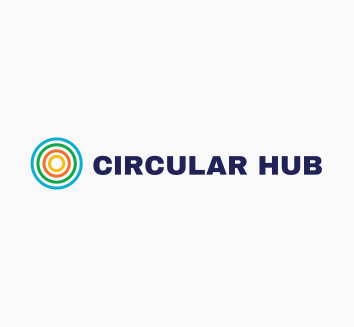

Circular Hub

- WEBSITE circularhub.au
- TYPE Service
- STATUS Beta
Circular Hub is a digital directory platform designed to accelerate Sydney’s transition toward a sustainable circular economy. The platform connects individuals, businesses, and organisations committed to circular practices — from recycling and reuse services to sustainable product design and waste reduction initiatives. By acting as a central hub, it facilitates collaboration, knowledge sharing, and the practical adoption of circular strategies that optimise resource use and build a more resilient, regenerative local economy.
The project began as a grassroots community recycling initiative and has since evolved into a regional digital resource supporting Sydney’s growing circular economy network. Circular Hub’s development focuses on usability and inclusivity — empowering communities and enterprises to easily discover, connect, and collaborate around circular solutions. Its expanding directory showcases local innovation while enabling systemic change through data-driven connections and partnerships.
Built on globally recognised sustainability frameworks, the platform aligns with the United Nations Sustainable Development Goals (SDGs) and ISO Circular Economy standards. Each listing is encouraged to demonstrate alignment with these benchmarks to ensure transparency, accountability, and measurable impact. Through this standards-based approach, Circular Hub not only strengthens Sydney’s local circular ecosystem but also positions it within the broader global sustainability movement.